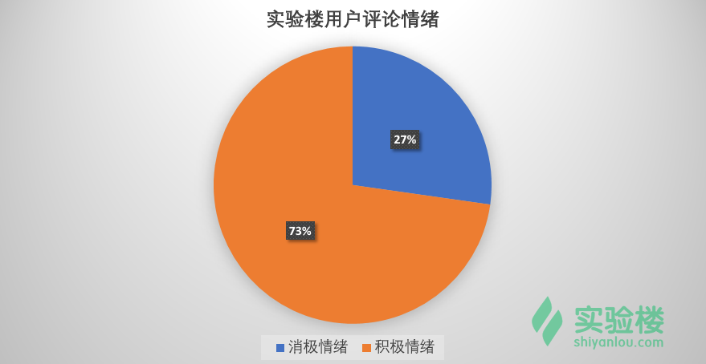

本实验为实验楼训练营课程 《Python 数据分析入门与进阶》的第九节，在该章节中我们将对实验楼用户产生的真实评论数据进行情感分析。
本文所涉及到情感分析，又称为文本情感分析，这是自然语言处理和文本挖掘过程中涉及到的一块内容。
简而言之，我们通过算法去判断一段文本、评论的情感偏向，从而快速地了解表达这段文本的原作者的主观情绪。
现实中，当我们在陈述一段内容时，可能会出现的情绪有：高兴、兴奋、激动、没感觉、失落、压抑、紧张、疑惑等。而在自然语言处理的世界里，我们尚且达不到如此细小的分类。所以，往往在针对文本进行情感分析时，只处理两种情绪状态：积极和消极。
当然，上面提到的计算机无法处理更细分的情绪类别其实并不准确。因为，算法原则上是能够区分更多的情绪类别，关键在于我们需要提供一个人工标注过的复杂情绪训练集，而这是非常难做到的。所以，目前我们在进行情感分析时，只处理积极和消极两种状态。
目前，针对文本情感分析的方法有两种，一种基于词典，另一种基于机器学习方法。首先，我们来叙述一下基于词典的文本情感分析原理。
基于词典的情感分析是非常简单和易于理解的一种方法。概括来讲，我们首先有一个人工标注好的词典。词典中的每一个此都对应这消极或积极的标签。词典举例如下：
| 词语 | 标签 |
|---|---|
| 很好 | 积极 |
| 不好 | 消极 |
| 高兴 | 积极 |
| 难受 | 消极 |
| 爱你 | 积极 |
| 讨厌 | 消极 |
| …… | …… |
然后，这个词典可能有上万条或者几十万条，当然是越多越好。有了词典之后，我们就可以开始进行文本情感分析了。
现在，我们收到一条用户评论：
这门课程很好啊！
然后，我们可以对这句话进行分词。分词结果如下：
['这门', '课程', '很', '好', '啊', '！']
接下来，我们拿分好的词依次去匹配词典。匹配的方法很简单:
+1;-1;0。匹配完一个句子之后，我们就可以计算整个句子的得分。总得分 >0 表示该句子情绪为积极，总得分小于零代表该句子为消极，总得分 = 0 表示无法判断情绪。
通过词典进行情绪分析的方法很简单，但缺点也很明显。我们往往需要一个很大的词典，且不断更新。这对人力物力都是极大的考验。
除此之外，该方法还有无法通过扩充词典解决的情绪判断问题。例如，当我们人类在判断一句话的清晰时，我们会往往更偏向于从整体把握（语言环境），尤其是在乎一些语气助词对情绪的影响。而基于词典进行情绪分析的方法就做不到这一点，将句子拆成词，就会影响句子的整体情绪表达。
目前，针对中文做情感标注的词典少之又少。比较常用的有：
以《知网》情感词典举例，它包含有 5 个文件，分别列述了正面与负面的情感词语以及程度词汇。
由于上面介绍的这种简单的词典对比方法准确率并不高，所以本实验不会通过这种方法来实现用户评论情绪分析。
除了基于词典对评论进行情感分析，我们还有一种方法称之为「词袋」模型。「词袋」不再将一句话看做是单个词汇构成，而是当作一个 1xN 的向量。举个例子，我们现在有两句话需要处理，分别是：
我爱你，我非常爱你。 我喜欢你，我非常喜欢你。
我们针对这两句话进行分词之后，去重处理为一个「词袋」：
['我', '爱', '喜欢', '你', '非常']
然后，根据「词袋」，我们对原句子进行向量转换。其中，向量的长度 N 为「词袋」的长度，而向量中每一个数值依次为「词袋」中的词出现在该句子中的次数。
我爱你，我非常爱你。 -> [2, 2, 0, 2, 1] 我喜欢你，我非常喜欢你。 -> [2, 0, 2, 2, 1]
有了「词袋」，有了已经人工标注好的句子，就组成了我们的训练数据。再根据机器学习方法来构建分类预测模型。从而判断新输入句子的情感。
你会发现，「词袋」模型和我们之前提到的 One-Hot 独热编码非常相似。其实这里就是将之前独热编码里的词变成了句子而已。
「词袋」模型固然比简单的词典对比方法更好，但 One-Hot 无法度量上下文之间的距离，也就无法结合上下文进行情感判断。下面，我们介绍一种词向量的 Word2vec 处理方法，就会很好地克服这个缺点。
Word2vec，故名思意就是将句子转换为向量，也就是词向量。Word2vec 最早由 Google 在 2013 年开源，它是由浅层神经网络组成的词向量转换模型。
Word2vec 的输入一般为规模庞大的语料库，输出为向量空间。Word2vec 的特点在于，语料库中的每个词都对应了向量空间中的一个向量，拥有上下文关系的词，映射到向量空间中的距离会更加接近。
Word2vec 的主要结构是 CBOW（Continuous Bag-of-Words Model）模型和 Skip-gram（Continuous Skip-gram）模型结合在一起。简单来讲，二者都是想通过上下文得到一个词出现的概率。
CBOW模型通过一个词的上下文（各N个词）预测当前词。而 Skip-gram 则恰好相反，他是用一个词预测其上下文，得到了当前词上下文的很多样本，因此可用于更大的数据集。
CBOW （N=2）和 Skip-gram的结构如下图所示：
图中 w(t) 表示当前的词汇，而 w(t−n)，w(t+n) 等则用来表示上下文词汇。
为了保证良好的准确度，本次实验我们选用了 Word2vec结合SVM 支持向量机的文本情感分析方法。首先，我们需要使用 Word2vec 来建立向量空间，之后再使用 SVM支持向量机训练文本情感分类模型。
由于我们未人工针对实验楼评论进行语料库标注，所以这里需要选择其他的已标注语料库进行模型训练。
这里，我们选用了网友 @苏剑林提供的语料库。该语料库整合了书籍、计算机等 7个领域的评论数据。
你可以通过下面链接下载本次实验所需要的数据集：
wget http://labfile.oss.aliyuncs.com/courses/764/data_09.zip
# 解压
unzip data_09.zip
.
├── course_09/data/neg.xls # 消极（负面）语句语料库
├── course_09/data/pos.xls # 积极（正面）语句语料库
└── course_09/comments.csv # 实验楼用户评论数据
三个数据文件的预览如下。
其中，neg.xls 共有 10428 行。
pos.xls共有 10679 行。
comments.csv 共有 12377 行。
在使用 Word2vec 之前，我们需要先对训练语料库进行分词处理。这里依旧使用上一节课提到的 jieba 分词。安装 jieba：
# 安装包到 anaconda3
$ sudo anaconda3/bin/pip install jieba
然后，在 data_09 文件夹下建立 words_array.py 文件：
# -*- coding: utf-8 -*-
import pandas as pd
import jieba
import numpy as np
# 加载语料库文件，并导入数据
neg = pd.read_excel('data/neg.xls', header=None, index=None)
pos = pd.read_excel('data/pos.xls', header=None, index=None)
# jieba 分词
word_cut = lambda x: jieba.lcut(x)
pos['words'] = pos[0].apply(word_cut)
neg['words'] = neg[0].apply(word_cut)
# 使用 1 表示积极情绪，0 表示消极情绪，并完成数组拼接
x = np.concatenate((pos['words'], neg['words']))
y = np.concatenate((np.ones(len(pos)), np.zeros(len(neg))))
# 将 Ndarray 保存为二进制文件备用
np.save('data/x_train.npy', x)
np.save('data/y_train.npy', y)
print('done.')
你可以预览一下数组的形状，以 x 为例：
执行 words_array.py，在线环境运行可能需要稍等几分钟。特别注意，我们的实验均是在 anaconda 的 python 3.6.1 下执行，务必注意每次安装包和执行代码是调用的 python 路径。
$ /home/shiyanlou/anaconda3/bin/python words_array.py
Word2vec处理有了分词之后的数组，我们就可以开始 Word2vec 处理，将其转换为词向量了。目前，很多开源工具都提供了 Word2vec 方法，比如 gensim，tensorflow，PaddlePaddle 等。这里我们使用 gensim。你需要先安装 gensim，可能会需要几分钟时间。如果没有 gensim 安装成功，请关闭终端重试。
# 安装包到 anaconda3
$ sudo anaconda3/bin/pip install gensim
然后我们编写word2vec.py代码
# -*- coding: utf-8 -*-
import numpy as np
from gensim.models.word2vec import Word2Vec
# 导入上面保存的分词数组
x_train = np.load('data/x_train.npy')
# 训练 Word2Vec 浅层神经网络模型
w2v = Word2Vec(size=300, min_count=10)
w2v.build_vocab(x_train)
w2v.train(x_train, total_examples=w2v.corpus_count, epochs=w2v.iter)
# 对每个句子的词向量进行均值计算
def average_vec(text):
vec = np.zeros(300).reshape((1, 300))
for word in text:
try:
vec += w2v[word].reshape((1, 300))
except KeyError:
continue
return vec
# 将词向量保存为 Ndarray
train_vec = np.concatenate([average_vec(z) for z in x_train])
# 保存 Word2Vec 模型及词向量
w2v.save('data/w2v_model.pkl')
np.save('data/x_train_vec.npy', train_vec)
执行 word2vec.py，这个过程可能需要几分钟。
$ /home/shiyanlou/anaconda3/bin/python word2vec.py
执行结束之后，你会得到我们保存的两个新的二进制文件。
有了词向量，我们就有了机器学习模型的输入。那么，我们就可以训练支持向量机情绪分类模型。这一块内容你应该很熟悉，使用 scikit-learn 完成。新建一个 svm_fit.py文件。
# -*- coding: utf-8 -*-
import numpy as np
from sklearn.externals import joblib
from sklearn.svm import SVC
# 导入词向量为训练特征
x = np.load('data/x_train_vec.npy')
# 导入情绪分类作为目标特征
y = np.load('data/y_train.npy')
# 构建支持向量机分类模型
model = SVC(kernel='rbf', verbose=True)
# 训练模型
model.fit(x, y)
# 保存模型为二进制文件
joblib.dump(model, 'data/svm_model.pkl')
执行 svm_fit.py，由于在线虚拟环境的计算能力较弱，训练过程可能需要** 20 多分钟**。
$ /home/shiyanlou/anaconda3/bin/python svm_fit.py
如果有条件，推荐在本地完成训练。或者直接通过下面的链接下载模型用于后面的内容。
# 支持向量机预训练模型
wget http://labfile.oss.aliyuncs.com/courses/764/svm_model.pkl
你也可以通过交叉验证来看一看模型分类的正确率情况。向上面的代码块中添加两行。这个过程可能需要更长的时间，非常不建议在线上环境中执行。
from sklearn.model_selection import cross_val_score
# 输出模型交叉验证准确率
print(cross_val_score(model, x, y))
有了 Word2vec 模型以及支持向量机情绪分类模型。接下来，我们就可以对实验楼的用户评论进行情绪预测了。
新建一个 sentiment_predict.py 文件。
# -*- coding: utf-8 -*-
from gensim.models.word2vec import Word2Vec
import numpy as np
import jieba
from sklearn.externals import joblib
import pandas as pd
# 读取 Word2Vec 并对新输入进行词向量计算
def average_vec(words):
# 读取 Word2Vec 模型
w2v = Word2Vec.load('data/w2v_model.pkl')
vec = np.zeros(300).reshape((1, 300))
for word in words:
try:
vec += w2v[word].reshape((1, 300))
except KeyError:
continue
return vec
# 对实验楼评论进行情感判断
def svm_predict():
# 读取实验楼评论
df = pd.read_csv("comments.csv", header=0)
comment_sentiment = []
for string in df['评论内容']:
# 对评论分词
words = jieba.lcut(str(string))
words_vec = average_vec(words)
# 读取支持向量机模型
model = joblib.load('data/svm_model.pkl')
result = model.predict(words_vec)
comment_sentiment.append(result[0])
# 实时返回积极或消极结果
if int(result[0]) == 1:
print(string, '[积极]')
else:
print(string, '[消极]')
#将情绪结果合并到原数据文件中
merged = pd.concat([df, pd.Series(comment_sentiment, name='用户情绪')], axis=1)
# 储存文件
pd.DataFrame.to_csv(merged,'comment_sentiment.csv')
print('done.')
# 执行
svm_predict()
执行 sentiment_predict.py，就可以看到实时预测结果了。
$ /home/shiyanlou/anaconda3/bin/python sentiment_predict.py
随机截取了一段返回结果，看起来还不错。（红色箭头为人工标记错误）
最后，我们可以通过饼状图看一下实验楼用户的情绪分布。总体看来，73% 都为积极评论，正能量满满。^-^

本章节，我们使用机器学习方法对实验楼用户真实评论进行了情感分析。内容涉及比较多，尤其是 Word2vec 处理。鉴于本课程的目的，我们并没有针对 Word2vec 进行太详细的介绍。如果你对自然语言处理感兴趣，Word2vec 一定是需要理解透彻的方法。除了使用机器学习方法，在文本情感分析时。我们往往会用到 LSTM（Long Short Term Memory networks）长短期记忆递归神经网络训练分类模型，在大规模语料数据中，应用效果可能会更优于支持向量机等方法。学有余力时，也可以自行了解学习。
除此之外，由于本次实验所用语料库来源于第三方购物网站的评论。所以，其训练的模型在预测实验楼用户情绪方面，可能并没有太好的泛化能力。如果能针对现有数据进行人工标注，对于预测以后的数据，结果应该会更好。